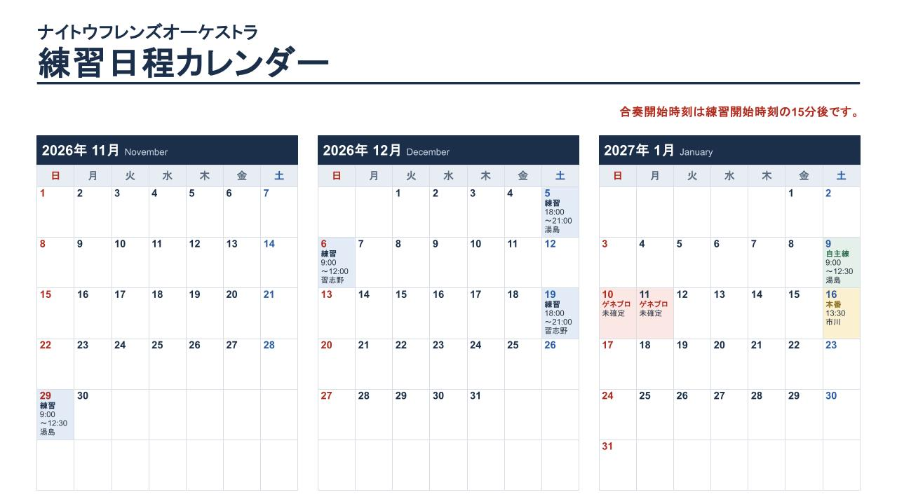

MEMBERS' INFORMATION
練習情報
出欠入力先
練習日程一覧

| 日付・時間 | 練習曲 | 会場 | 打楽器 | 練習内容 |
|---|---|---|---|---|
| 2026年11月29日 9:00～12:30 | チャイ5 三楽章 チャイ5 四楽章 | アカデミー湯島 5階視聴覚室 | 有 | 合奏 |
| 2026年12月5日 18:00～21:00 | Friends forever チャイ5 四楽章 | アカデミー湯島 5階視聴覚室 | 有 | 合奏 |
| 2026年12月6日 9:00～12:00 | チャイ5 二楽章 Friends forever | プラッツ習志野 音楽室1 | 無 | 合奏 |
| 2026年12月19日 18:00～21:00 | チャイ5 三楽章 チャイ5 四楽章 | プラッツ習志野 音楽室1 | 無 | 合奏 |
| 2027年1月9日 9:00～12:30 | 全て | アカデミー湯島 5階視聴覚室 | 有 | 自主 |
| 2027年1月10日 | 全て | 未定 | 無 | ゲネプロ |
| 2027年1月11日 | 全て | 未定 | 有 | ゲネプロ |